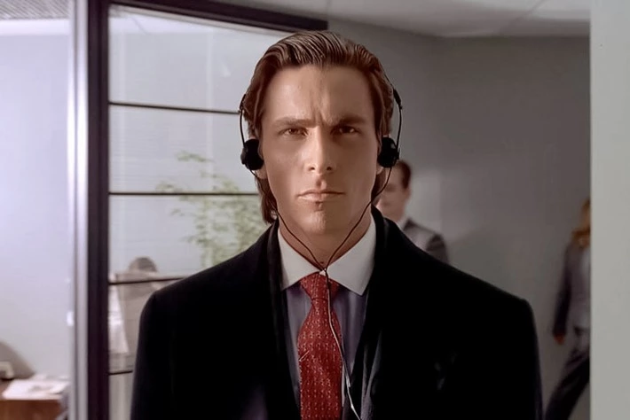
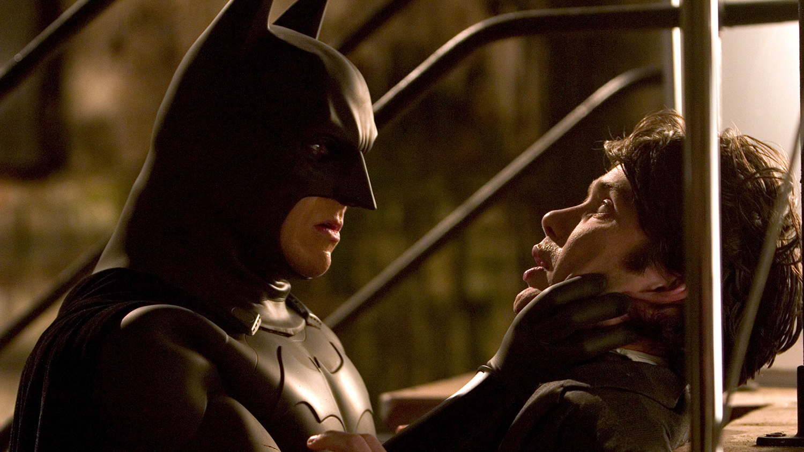
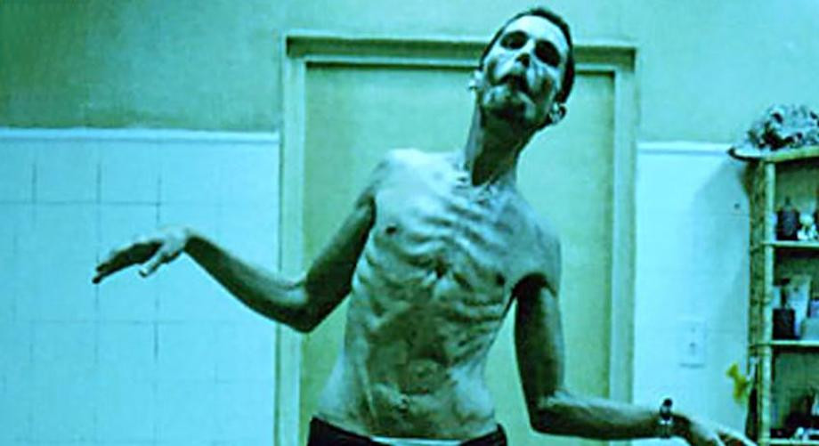
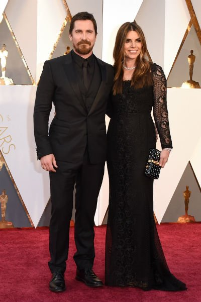
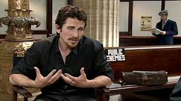

Подборка известных образов и ролей актёра в кино и на фотосессиях.
Кадры из фильмов

Кристиан Бейл в роли Патрика Бэйтмана, «Американский психопат» (2000).

Бэтмен — культовая роль Бейла в трилогии Кристофера Нолана.

Экстремальное перевоплощение в фильме «Машинист» (2004).
Фотосессии и мероприятия

На премьере фильма «Ford против Ferrari» (2019).

Интервью для журнала Esquire, 2022 год.